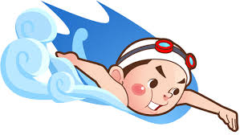

Hello Swimmer
SEONGHOON`S SWIM에 오신것을 환영합니다.
SEONGHOON`S SWIM은 생활체육을 좋아하는
모든 분들에게 무료로 수영정보를 제공하는 곳 입니다.
다양한 정보들을 보기 전에
수영이란것이 무엇인지 먼저 알아보는 것이 좋을 것 같습니다.
수영이란?
손과 발을 사용하여 물 위나 물속을 자유롭게 이동 또는 정지하는 운동, 즉 헤엄치는 것을 말한다.
현대인들의 생활체육에 적합하고 남녀노소 누구나 즐길 수 있으며 스포츠 종목 중에서 비교적 쉬운 운동으로서의 숙달
방법이 단순한 편이다. 전신운동이고, 큰 호흡운동을 요구하기 때문에 근육이나 심폐의 발달에 좋은 운동이다.
수영의 역사
인간이 수영을 하게 된 동기는 생활수단(고기잡이, 교통수단, 호신)과 종교의식, 질병치료로 생각된다.
기록으로 남아 있는 것은 9,000여 년 전의 것으로 추측되는 리비아 동굴의 수영하는 사람의 모습이 새겨진
벽화가 최초이고, 의도적으로 수영을 하기 시작한것은 페르시아에서의 소년들의 신체 단련과 군사훈련,
아시리아에서의 군사 훈련 이며, 중제에 와서는 수영이 군인 훈련으로 행하여졌다.
근세 초기에는 이탈리아의 베르나르니, 독일의 구츠무츠, 푸엘 등에 의해 국민 보건, 교육, 여가활동으로 수영이
바람직한 것으로 인정, 권장하게 되었다.
1837년에 영국 런던에서 처음으로 수영이 경영으로 거행되었으며, 영법은 평영과 횡영이었다.
이와 같은 영법은 지금의 자유형, 평영, 배영, 접영으로 개량 발전되어 왔다.
수영의 특성 및 효과
- 수영은 대표적인 유산소 운동으로 심폐 기능을 강화하고 순환기 계통을 발달시킨다.
- 수영은 신체의 모든 부위를 사용하는 전신 운동으로 전신의 근육을 고르게 발달시켜 균 형 있는 몸매를 만들 수 있다.
- 수영은 중력의 영향을 덜 받는 운동으로 물 속에서는 관절에 무리가 가지 않아 요통이 나 무릎, 발목 관절염 환자를 위한 치료에도 효과가 있다.
- 수영은 다른 유산소 운동에 비해 칼로리 소모량이 높아 체중 조절은 물론 각종 성인병 예방과 질병에 대한 저항력을 길러준다.
- 수영은 심리적 안정과 집중력을 향상시키는 도움이 된다.
- 수영을 배우면 수상 안전사고 발생 시에 자신은 물론 타인의 생명도 구할 수 있다.